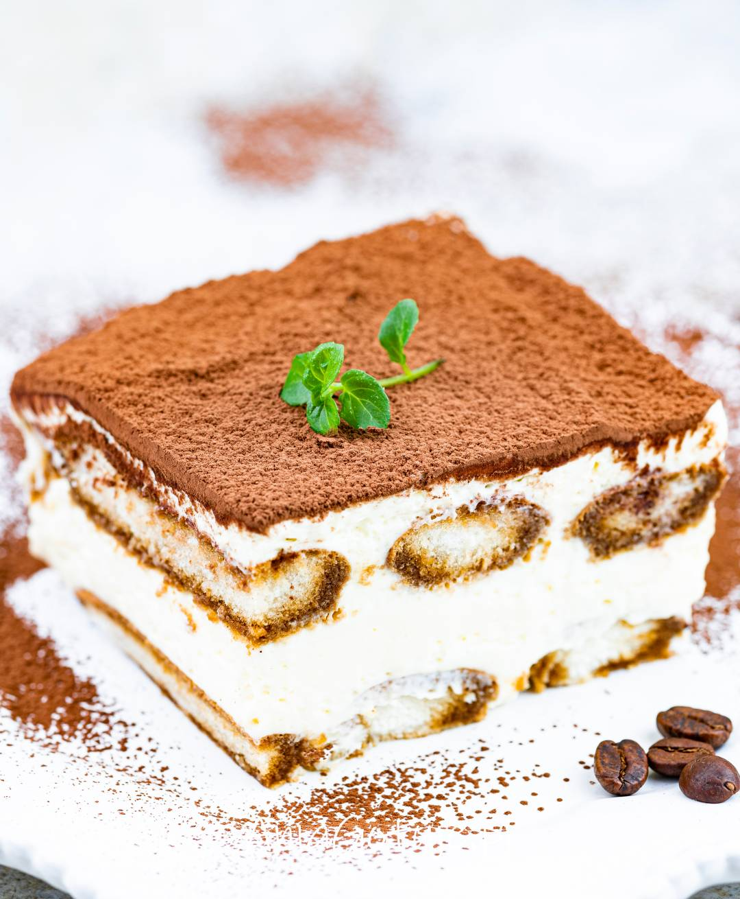

Tiramisu
Zapraszam po sprawdzony przepis na włoskie Tiramisu z mascarpone. Jest to niezwykle pyszny i bardzo
popularny
deser, który zawsze podajemy schłodzony, a najlepiej do przedpołudniowej kawy.
Czas przygotowania: 1 godzina
Czas chłodzenia ciasta: 3 godziny
Liczba porcji: do 1200 g ciasta
Kaloryczność kcal: 295 w 100 g ciasta
Składniki
- 350 ml zaparzonej mocniejszej kawy
- 25 ml likieru amaretto lub Maraschino
- 2 jajka + 2 żółtka
- 70 g cukru pudru
- 500 g serka mascarpone
- 300 g podłużnych biszkoptów (włoskich Savoiardi)
- ok. 3 łyżek gorzkiego kakao
Sposób Przygotowania
- Jajka włożyć do zlewu i przelać gorącą wodą. Zaparzyć kawę, dodać likier i całość ostudzić.
Oddzielić
żółtka od białek.
- Wszystkie 4 żółtka ubić z cukrem pudrem na puszysty i jasny krem (ok. 7 minut) - najlepiej
początkowo
ubijać na parze (w metalowej misce zawieszonej na garnku z parującą wodą), a gdy żółtka będą już
ciepłe,
odstawić z pary i dalej ubijać.
- Następnie dodawać porcjami (po 3 łyżki) mascarpone, ale już w krótszych odstępach czasu, cały czas
ubijając, aż krem będzie gęsty i jednolity.
- W oddzielnej misce ubić białka na idealnie sztywną pianę z dodatkiem małej szczypty soli. Połączyć
je z
kremem z żółtek i mascarpone delikatnie mieszając łyżką.
- Połowę biszkoptów na moment zanurzać w kawie i układać w prostokątnym naczyniu np. żaroodpornym lub
szklanym (ok. 20 x 22 cm) lub w pojedynczych naczynkach. Posypać cienką warstwą kakao.
- Wyłożyć połowę kremu i przykryć kolejną warstwą nasączonych biszkoptów. Znów oprószyć kakao.
Posmarować
resztą kremu, posypać kakao i wstawić do lodówki na minimum 3 godziny lub na całą noc.